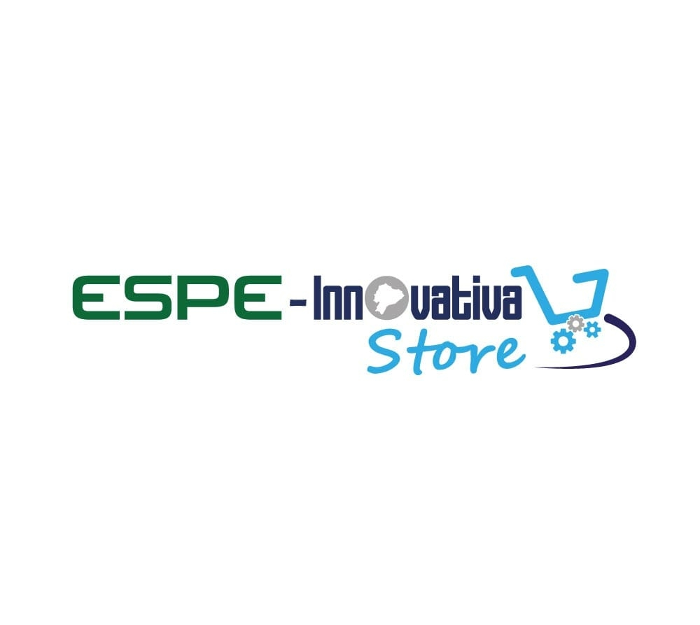
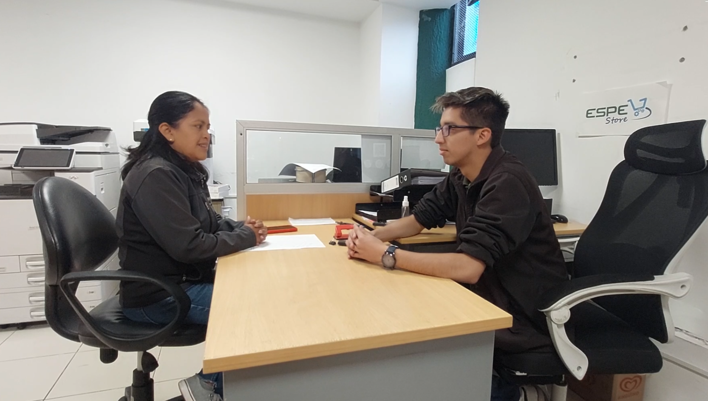
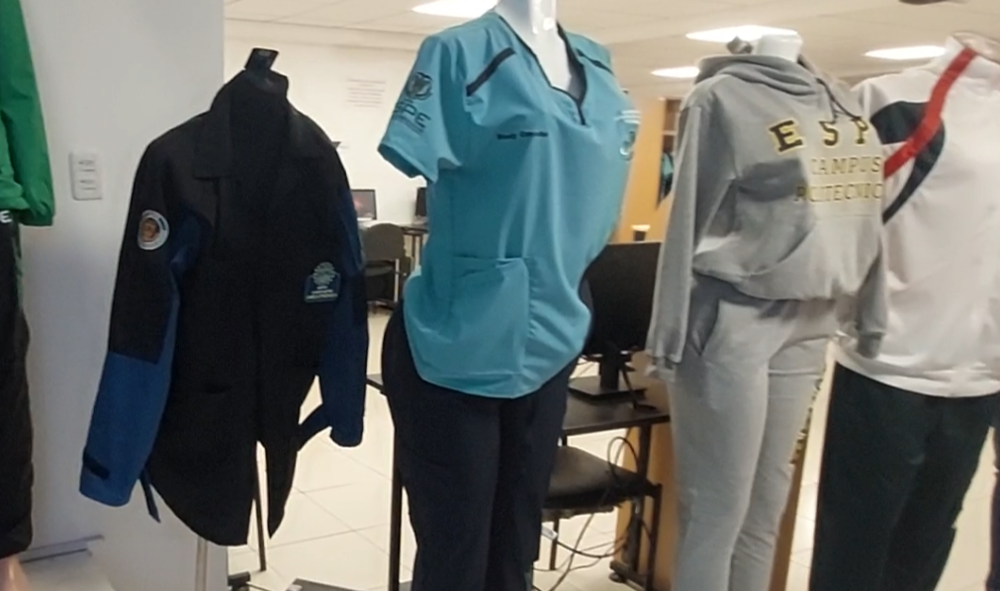
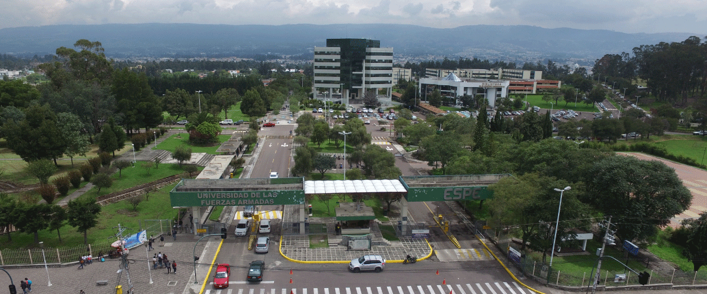

GESTIÓN Y EMPRENDIMIENTO
Bienvenido a la nueva edición de la revista digital.
Un emprendimiento con propósito

Marta Pachacama, administradora de la papelería universitaria, compartió que el emprendimiento nació como respuesta directa a la necesidad de insumos escolares, impresiones y consultas en línea dentro de la universidad.
A través del convenio entre la universidad y la empresa pública ESPE-Innovativa, se logró implementar este espacio, brindando además uniformes para todas las carreras y contribuyendo al bienestar estudiantil.
¿Por qué nació la papelería?
El surgimiento de la papelería responde a la necesidad urgente de los estudiantes por contar con insumos escolares, servicios de impresión y acceso a herramientas digitales. La falta de un espacio institucional formal motivó a Innovativa a implementar este servicio dentro del campus.
Uno de los principales desafíos ha sido la competencia informal: proveedores externos intentan ofrecer productos sin autorización, lo que ha impulsado a reforzar la legalidad y confianza en el espacio habilitado mediante convenio institucional. Hoy en día, el local ofrece una amplia gama de productos: desde papelería y uniformes específicos por carrera hasta souvenirs personalizados. Todo bajo un control estructurado y en constante mejora según los requerimientos estudiantiles.
Impacto y vínculo con los estudiantes
La papelería ha sido un punto de conexión entre estudiantes y universidad. Al suplir necesidades básicas dentro del campus, se crea una relación más cercana, accesible y organizada. Además, evita que terceros ajenos comercialicen productos sin autorización, lo que garantiza transparencia y calidad.
Compromiso ambiental
La responsable del negocio ha promovido prácticas sostenibles como la reducción de impresiones mediante el uso de medios digitales y el reciclaje de botellas plásticas. Este enfoque demuestra que un emprendimiento también puede ser un agente de cambio ambiental dentro de una institución educativa.
Escuchar para mejorar
Gracias al soporte digital de ESPINNOVATIVA, se envían encuestas virtuales para conocer sugerencias y reclamos. Con base en estos reportes, se amplía la oferta según la demanda estudiantil, como fue el caso reciente de nuevos souvenirs con identidad institucional.

Gestión con tecnología
El negocio utiliza el sistema Contífico, el cual permite llevar un control detallado del inventario y las ventas diarias. Esta digitalización optimiza los procesos administrativos y permite mantener un flujo de trabajo ágil y preciso.
Lecciones de un caso real
Este emprendimiento es un ejemplo de cómo detectar una necesidad puede transformarse en una oportunidad de negocio que impacta positivamente en la comunidad. La integración de prácticas responsables, gestión tecnológica y adaptación constante, convierten a esta papelería en un modelo de emprendimiento universitario moderno y efectivo.